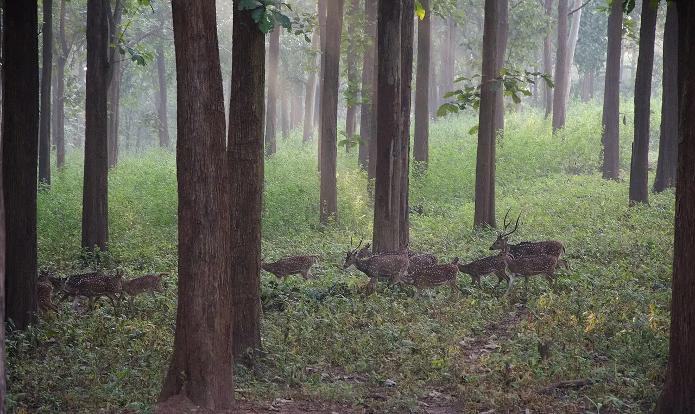
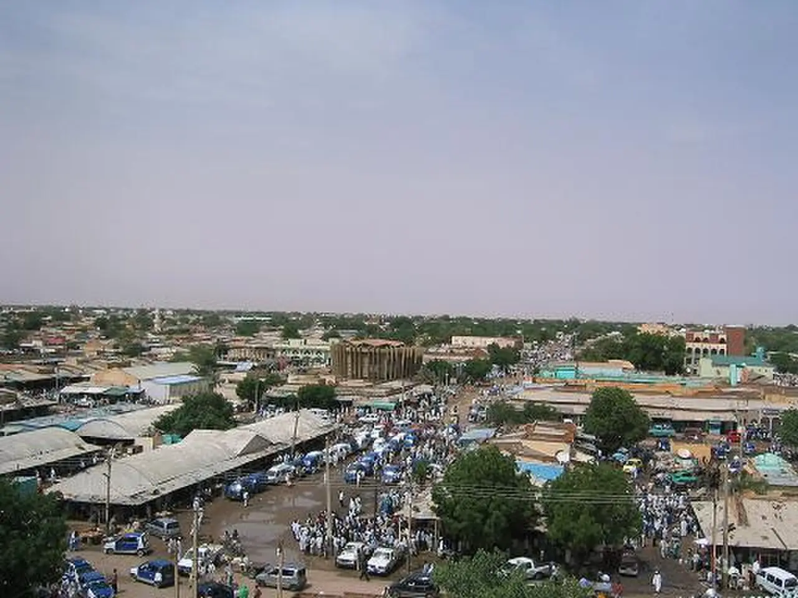
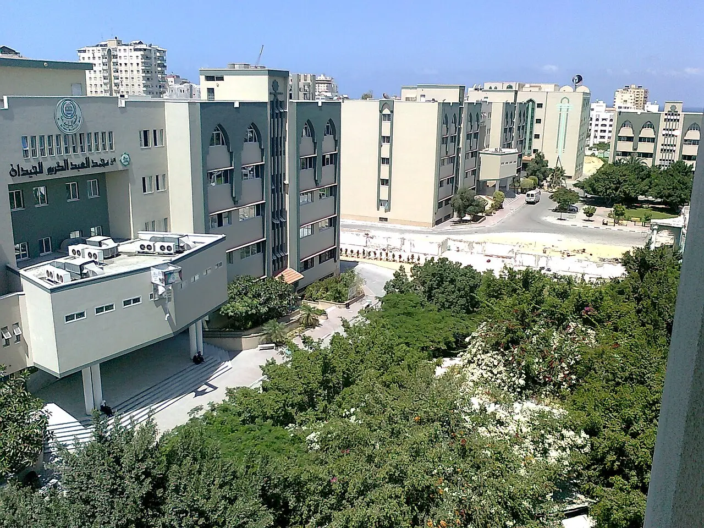
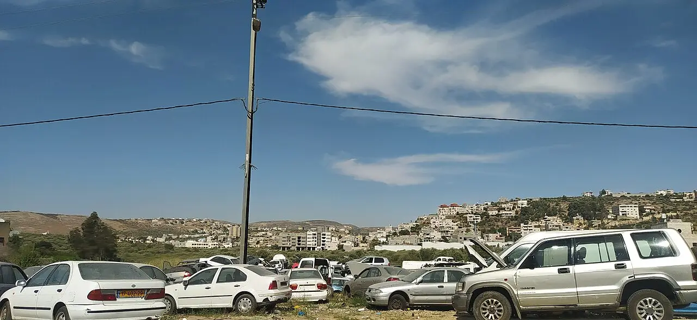
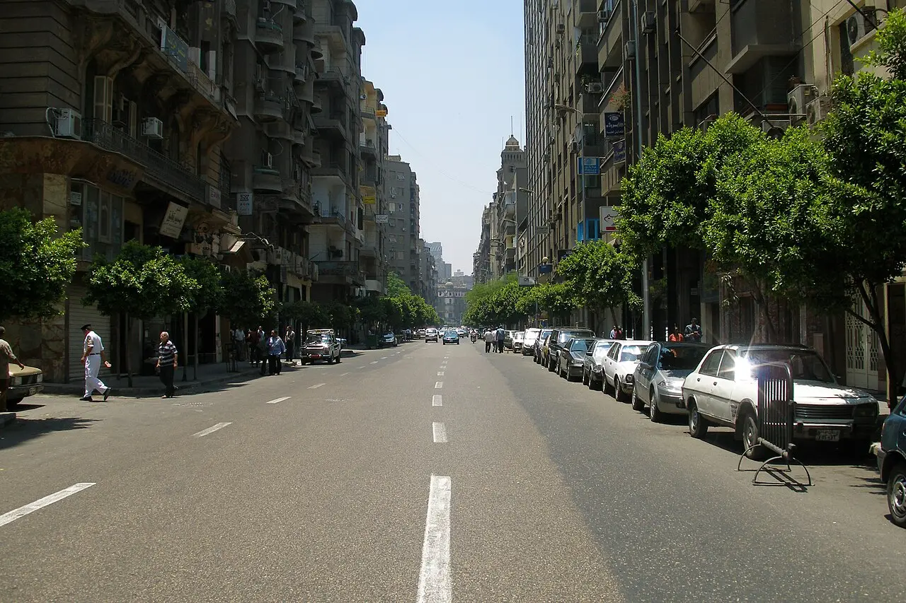
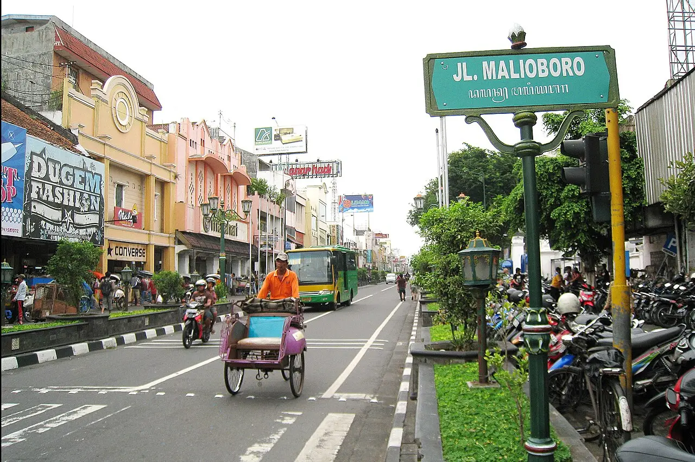

Woman loses leg in Kangpokpi blast
A 41-year-old woman grazing cattle lost her left leg to a suspected explosive device, the area's third blast in about five days, villagers say. No police statement was reported.
Northeast Live · Manipur thread →12 stories, each with its photo, the official position and its sources.
A 41-year-old woman grazing cattle lost her left leg to a suspected explosive device, the area's third blast in about five days, villagers say. No police statement was reported.
Northeast Live · Manipur thread →
Karnataka asked the High Court to hold 39 Jenu Kuruba families in contempt, saying they set up camps in a tiger reserve. A community group calls it "bureaucratic highhandedness".
The HinduTwo Adivasi hamlets inside Adani Power's 2,400 MW plant site are absent from project documents; the ministry's EIA terms say "No R&R is involved". No company or official response was reported.
The News MinuteThe NHRC asked Sehore's collector for a report within a week on the demolition of tribal families' homes, crops and a well. No state response was reported.
Free Press Journal
Two in three child casualties in Sudan this year were caused by armed drones, UNICEF says; up to 15 power stations were hit in October. It could not say who launched them.
UN News · Photos and full story → · Sudan's war thread →
Israeli strikes and gunfire killed at least eight Palestinians, including a 13-year-old boy and his father, local health sources said. No Israeli military comment was reported.
Al Jazeera · Photos and full story → · Palestine thread →
The owner says over 150 settlers stoned workers and burned excavators. No army statement on Beita was reported; the army said it cleared four outposts elsewhere over repeated violence.
Middle East Eye · Times of Israel · Photos and full story → · Palestine thread →Residents say military gyrocopters bombed a school and homes on Saturday, killing 11 including four children; with no internet, a warning came too late. The military has not commented.
RFA
The UN rights office says Egypt detained all six Matsadash journalists; lawyers allege torture and forced confessions. It urged their release. No Egyptian response was reported.
UN News
A rally over wages and a protest ban ended in clashes at the regional council. Police say Molotov cocktails were thrown; legal aid group LBH reports 11 injured.
CNN IndonesiaThe Privy Council ruled unanimously for activist Jason Jones that two sections criminalising consensual same-sex conduct are unconstitutional, dismissing the Attorney General's cross-appeal. A final order will follow.
Jamaica Observer · HRW.jpg){kind=link}